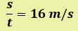

Relación entre magnitudes
Muchas veces se presentan situaciones en las que el valor o cantidad de una magnitud depende del valor o cantidad de otra.
Retomemos el ejemplo de función lineal que se colocaba en el epígrafe anterior:
s = 16t función lineal de la Física, donde la distancia se expresa en función del tiempo y la velocidad es constante (v = 16 m/s), esto sucede en el movimiento rectilíneo uniforme (MRU).
Analicemos una tabla para distintos valores de tiempo:
| t (s) | 5 | 7 | 10 | 12 |
| s (m) | 80 | 112 | 160 | 192 |
Como podemos ver las cantidades tiempo (t) y distancia (s) varían, pues, son la variable independiente y dependiente de la función analizada. El valor 16 es una constante que en este caso es la velocidad (V), la cual no varía en el MRU.
¿Cómo varía una variable respecto a la otra?
Se puede observar que a medida que el tiempo aumenta también la distancia aumenta, pues esta se obtiene de multiplicar cada valor de tiempo por la constante 16.
Cuando esto sucede las magnitudes son directamente proporcionales o están en una variación directa.
En el primero básico se definía de la siguiente forma:
Cuando dos magnitudes están relacionadas de modo que los valores de una de ellas se obtienen multiplicando por un mismo número los valores correspondientes de la otra, se dice que son directamente proporcionales o que están en variación directa.
La tabla que relaciona ambas magnitudes se conoce como tabla de variación.
La variación directamente proporcional de espacio y tiempo en este ejemplo se expresa así:

A la constante 16 se le llama factor de proporcionalidad directa pues es el número por el que multiplicamos el tiempo para obtener la distancia correspondiente.